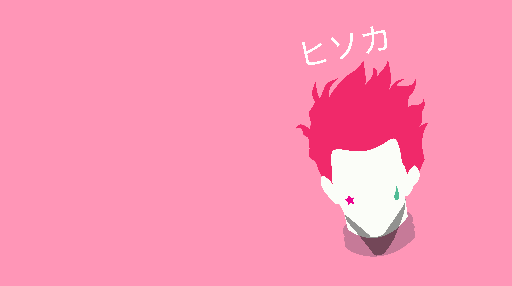

Gallery
I enjoy sketching in my free time, finding it a relaxing and creatively fulfilling activity. This passion
for sketching helps me build games by allowing me to visualize and conceptualize my ideas more effectively.
I am still learning and getting better at it, continuously improving my ability to create distinctive characters,
environments, and elements that contribute to the overall aesthetic and immersive experience of my games.

